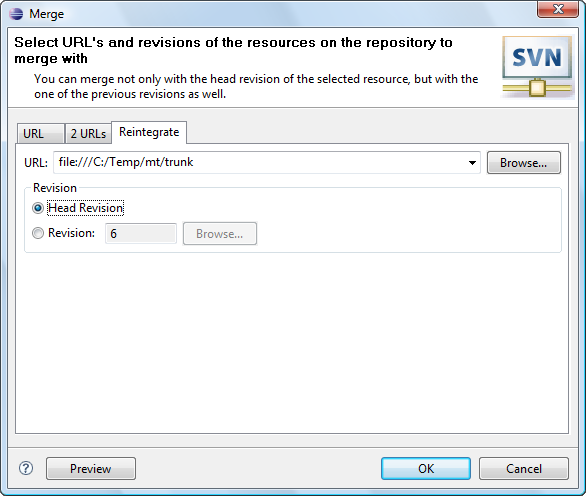

|
|
|
This dialog appears when the user clicks on 'Team>Merge...' menu item in the pop-up menu of the resource linked with the repository location, 'Merge...' menu item of the 'SVN main menu group' or on the 'Merge...' button on the 'SVN Toolbar'. It's a known fact that the merge functionality differs for SVN 1.4 and SVN 1.5, so the different dialogs are used. The difference is described below.
Common of SVN 1.4 and SVN 1.5 merges:
The common part of the different SVN versions' merge is the '2 URL' merge mode. It allows you to merge the changes between two resources from different URLs simply
specifying the appropriate revisions of them. The screen shot of the dialog in '2 URL' mode is shown below:
| Option | Description | Default |
| URL1 | Specifies the first remote resource location | 'blank' |
| URL2 | Specifies the second remote resource location | 'blank' |
| Start revision | Specifies the minimum merge range revision number. | Head |
| Stop revision | Specifies the maximum merge range revision number. | Head |
| Ignore Ancestry | Specifies if Subversion® should ignore the ancestry of resources while merging. | Disabled |
| Depth | Specifies the depth to be covered by merge. | Working copy |
SVN 1.4 specific merge:
The 'One URL' merge in SVN 1.4 is performed by blending the differences between two revision of the same resource to the working copy.
this is how the dialog looks like then:
| Option | Description | Default |
| URL | Specifies the remote resource location | 'blank' |
| Start revision | Specifies the minimum merge range revision number. | Head |
| Stop revision | Specifies the maximum merge range revision number. | Head |
| Ignore Ancestry | Specifies if Subversion® should ignore the ancestry of resources while merging. | Disabled |
| Depth | Specifies the depth to be covered by merge. | Working copy |
SVN 1.5 specific merge:
While performing 'One URL' merge in SVN 1.5 the user can not only select start and stop revisions, but
exact revision ranges to be used by the merge. The merge can be made for the whole revision range of the resource, from the copy time or the range
can be selected manually in the 'Revision Selection' dialog as displayed below:
Content of all the selected revisions will be merged into the folder you perform merge over. And there is a little difference between selecting revisions in the Revision Selection dialog and entering them manually: when you select revisions - it's intuitive and understandable that all the selected revisions changes will be used while merging, but when you enter revision ranges manually you should take into account that revision range defines a difference between two specified revisions. What is a difference between revisions means exactly? That is simple, lets say, for example, you need to merge all the changes happened after the revision 5000 and up to the revision 5005. In that case you should specify revision range 5000-5005. It means that only changes from 5 revisions (5001, 5002, 5003, 5004 and 5005) will be merged into your code: just like in math when you subtracting two numbers. When you need changes not between a two revisions, but changes starting from a revision and up to a revision, you should descrease a start revision number of the revision range by 1, i.e. if you need all the changes from the revisions 5000-5005, you should specify revision range like this: 4999-5005 and that will include revision 5000 too. Revision Selection dialog automatically decrements lowest selected revision number by 1 in order to make revision selection process intuitively understandable.
Also in such mode it's impossible to determine if the merge is reversed, so the checkbox was added to let the user specify this manually. The dialog in 'One URL' mode for SVN 1.5 looks like this:
| Option | Description | Default |
| URL | Specifies the remote resource location | 'blank' |
| Revisions | Specifies revision range to be used in merge. | Start from copy |
| Reverse | Specifies if the reverse merge should be performed. | Disabled |
| Ignore Ancestry | Specifies if Subversion® should ignore the ancestry of resources while merging. | Disabled |
| Depth | Specifies the depth to be covered by merge. | Working copy |
The 'Reintegrate' mode is used to allow the Subversion to merge from the branch the changes skipping the ones the same for the version you are merging into and the branch you are merging from. This is how the dialog for 'Reintegrate' mode looks like:
| Option | Description | Default |
| URL | Specifies the remote resource location | 'blank' |
| Revision | Specifies revision to merge to. | Head Revision |
With the 'Preview' button the user can inspect the consequences of the merge operation.